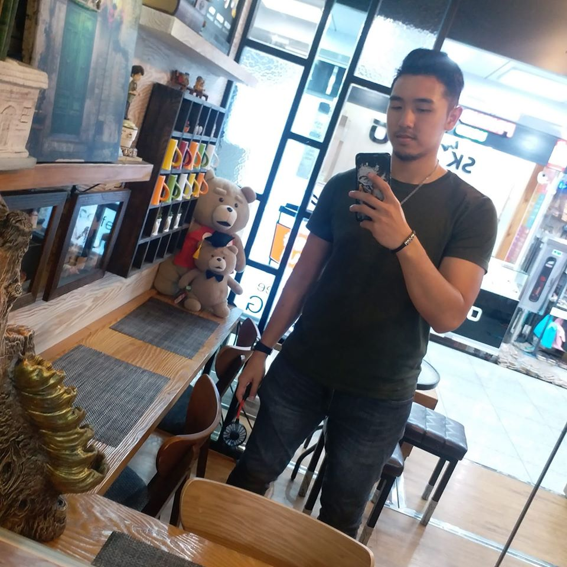

Kyran LAU
Je me suis occuppé princialement de la présentation, mais les pages ont été faites en équipe.
Nos Réseaux Sociaux

Thomas ROCHE
Bonjour, je m'appelle Thomas, j'habite a Villejuif et je suis en école d'ingénieur : EFREI Paris.
Les dommaine que j'apprécie particulièrement sont l'informatique, l'automobile et les jeux vidéo.
Je pratique plusieurs sport comme le vélo, le skate-board et la courses automobile.
Ce projet de site WEB m'a permis d'apprendre a travailler en équipes sur les languages de programation que sont le CSS, le HTML et le JavaScript.
Vous trouverez ci-dessous mes réseaux sociaux personnel.
Nos Réseaux Sociaux